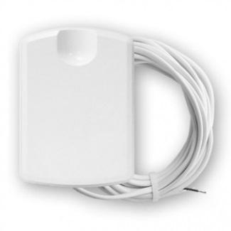
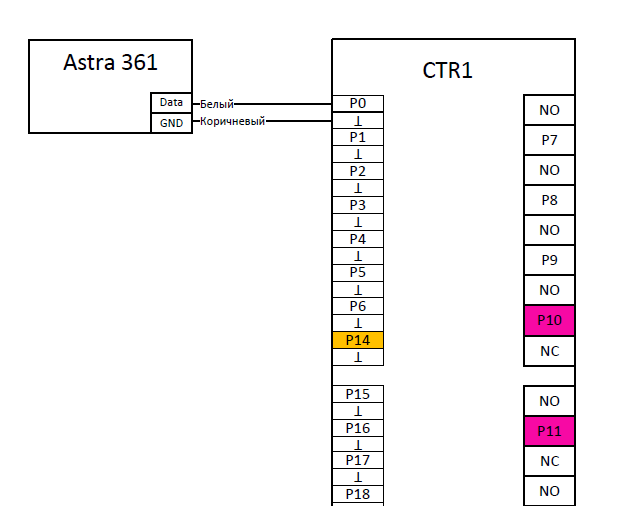
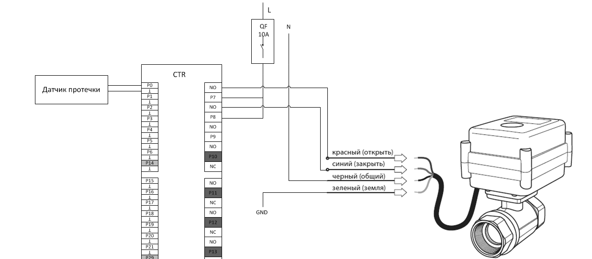
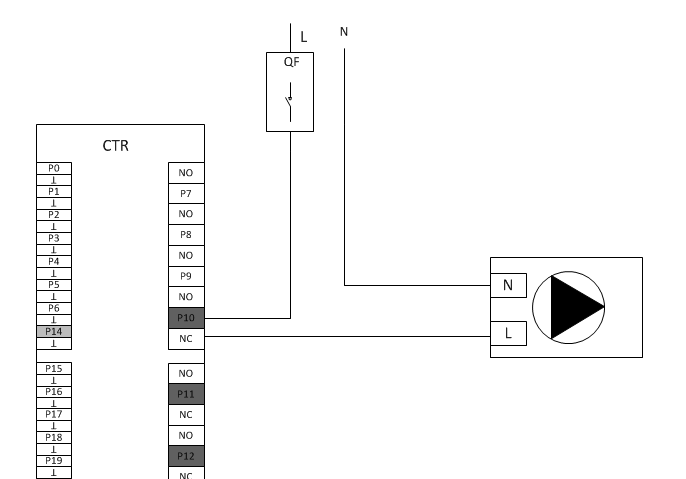

Водоснабжение
-
Датчик протечки монтируется на пол в местах потенциально возможной протечки. Подключается витой парой UTP 5e
-
Клапан перекрытия воды с сервоприводом на 220В. Подключение кабелем ШВВП или ПВС 3х075
Подключение датчика протечки
К контроллеру TouchOn можно подключать любые датчики протечки. Датчики протечки подключаются на любые стандартные входы: P0-P6, P15-P21
Характеристики датчика:
| Электропитание | - |
| Протокол | Сухой контакт NO |
| Способ монтажа | Напольный |
Датчик протечки Теко Астра-361:

Пример подключения датчика Теко Астра-361:

Двухходовой клапан
Для обеспечения перекрытия подачи воды в случае аварии или протечки, необходимо установить на трубы подвода воды электрические 2-х ходовые зональные клапаны. Время открывания и закрывания клапана задается программно. Сервоприводы клапанов подключаются к любому выходу контроллера на NO контакт. Соответственно для перекрытия воды используется два клапана (холодная, горячая вода) и 4 выхода контроллера.
Используемые модели:
-
STOUT SVM-0070-200020
-
Neptun AquaControl 220В
-
Или аналог.
Пример подключения Neptun AquaControl 220В:

Насосы
Подключение насосов, которые играют важную роль в жизнедеятельности системы отопления и водоснабжения и которые в основном в работе (скважинные насосы, циркуляционные насосы, компрессоры биостанций и др.), подключаются на нормально-замкнутые контакты контроллера. Контакты NC есть на портах Р10-Р13 и Р25-Р28.
Насосы, которые в основном не в работе и включаются только по каким-то нуждам или условиям (насос полива или циркуляционный насос отопления бани), лучше подключать на нормально-открытые контакты портов.
Схема подключения:
